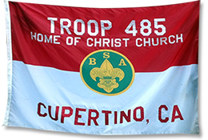

About T485
Troop 485 was formed in 2006 and is chartered by the Home of Christ Church in Cupertino. The troop has scouts from the cities of Cupertino, Sunnyvale, Mountain View, Palo Alto, San Jose, Santa Clara and Saratoga. The main thing that makes Troop 485 great is our variety outings and activities. In the past, we’ve done archery, had beach outings, backpacked in the Santa Cruz Mountains, rafting on a river, slept in snow caves and many, many more fun things. During this past summer, we went to Camp Meriwether. Troop 485 has about 40 scouts and is located in Cupertino, California. It is with the Polaris District in Silicon Valley Monterey Bay Council. Troop meetings are on Mondays from 7-8:30PM at the Home of Christ Church in Cupertino in the English Sanctuary.
About the BSA
 The Boy Scouts of America is one of the nation’s largest and most prominent values-based youth development organizations. The BSA provides a
program for young people that builds character, trains them in the responsibilities of participating citizenship, and develops personal fitness.For over a century, the BSA has helped build the future leaders of this country by
combining educational activities and lifelong values with fun. The Boy Scouts of America believes — and, through over a century of experience, knows — that helping youth is a key to building a more conscientious, responsible, and
productive society.
The Boy Scouts of America is one of the nation’s largest and most prominent values-based youth development organizations. The BSA provides a
program for young people that builds character, trains them in the responsibilities of participating citizenship, and develops personal fitness.For over a century, the BSA has helped build the future leaders of this country by
combining educational activities and lifelong values with fun. The Boy Scouts of America believes — and, through over a century of experience, knows — that helping youth is a key to building a more conscientious, responsible, and
productive society.